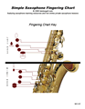
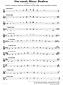

Free downloadable Saxophone Learning Resources
The following resources are provided free of charge to help you become a better musician or get get started playing the saxophone. Some go along with video lessons or are intended for use in a Private online Lesson, but many will be useful on their own. This page is always growing so check back frequently. |
|  |
Fingering Chart for Beginners
A simplified version of the Saxophone fingering Chart containing only the notes and fingerings you need to get started. Excludes the extreme range and alternate fingerings. |
|
|
 |
Note Values
Note values are the basic elemnts of rhythm and timing. This is a 2 page primer on note values for any instrument. |
|
 |
Rhythm Flash Cards
Flash Cards of the most common rhythms used in music notation, with directions. |
|
|  |
Harmonic Minor Scales
All Harmonic Minor Scales written in the order of the Circle of 5ths. A great practice and reference tool. |
|